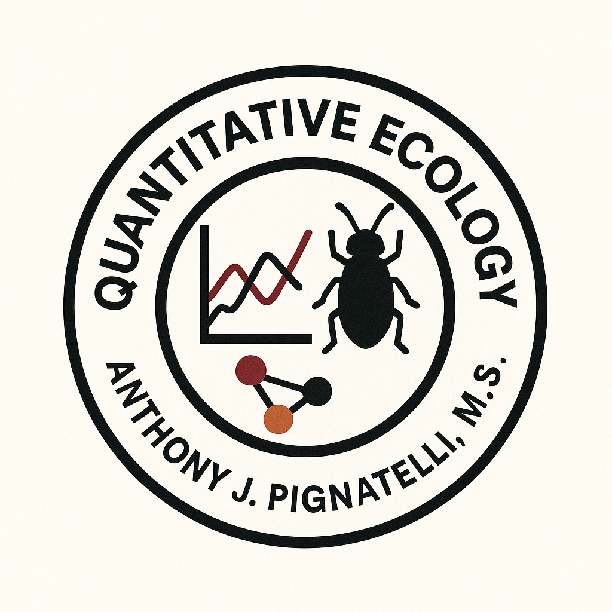

Quantitative Ecology at U of SC
Get in touch:
Let’s connect and chat science or collaborate!
pignatea@email.sc.edu - Work
anthonyjpignatelli@gmail.com - Personal
Address
Room 601
Earth and Water Sciences Building
Department of Biological Sciences
University of South Carolina
701 Sumter Street
Columbia, SC 29208
